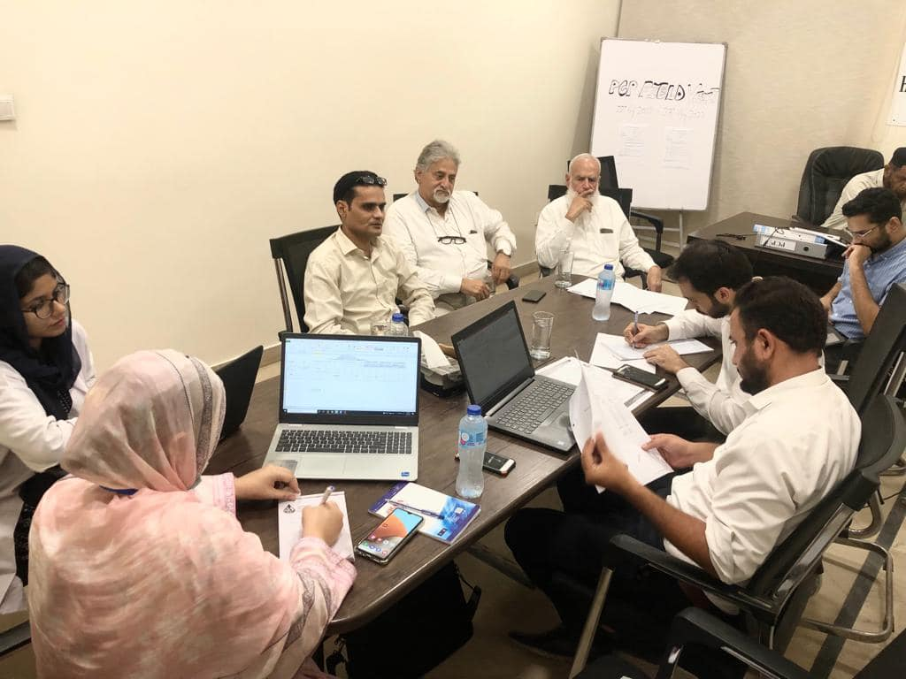

News
News of HWSK

HWSK Magazine & news
About HWSK in the Sindh Commentary and archival information about HWSK welfare from Karachi News and media. Our Life Healthcare magazine in health and wellbeing and is published...
Read More


Lastes Project of HWSK
At Stanford Medicine, our mission is to find new and better ways to protect the health and enhance the quality of life of all Hemophilia Patients. Our community of physicians, nurses, staff...
Read More
HWSK Social Network
Health-related social networks have the potential to 'recruit' patients at low cost, and create a multiplier effect when new information is shared among hemophilia patient
Read More